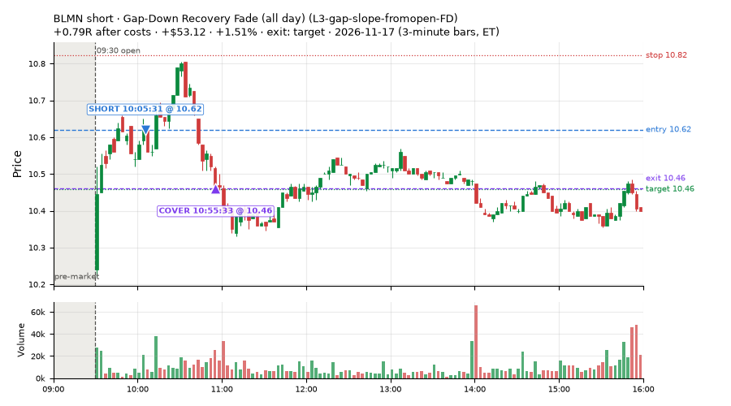
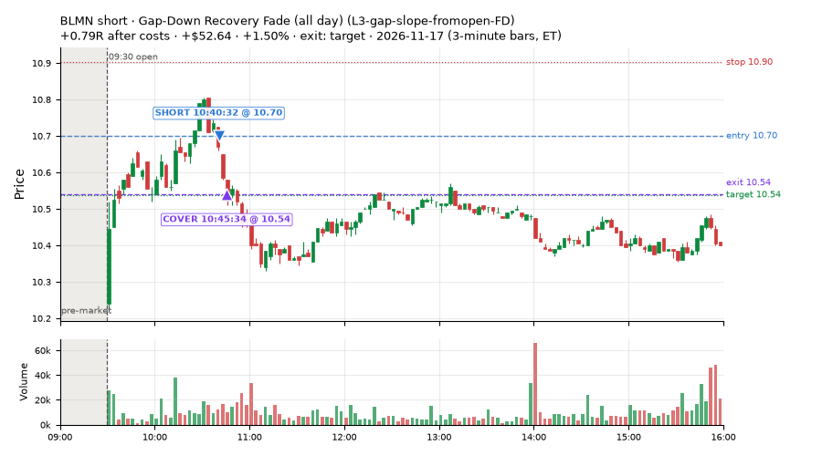
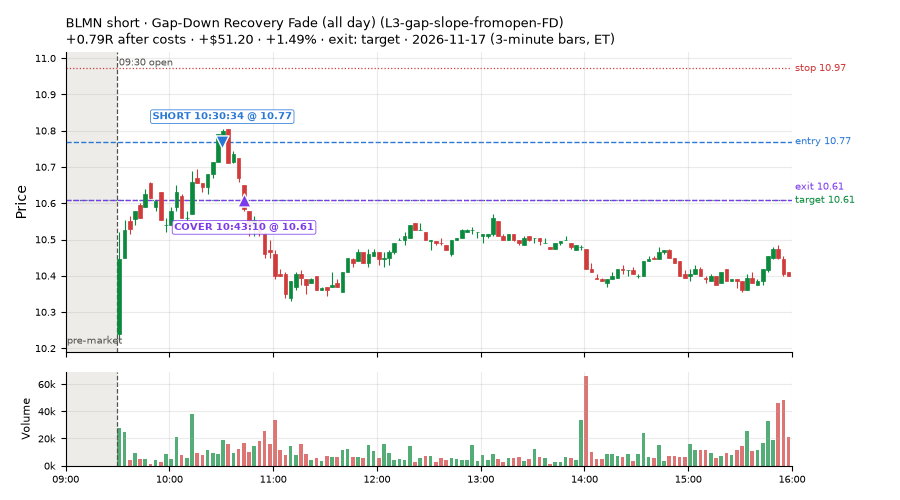
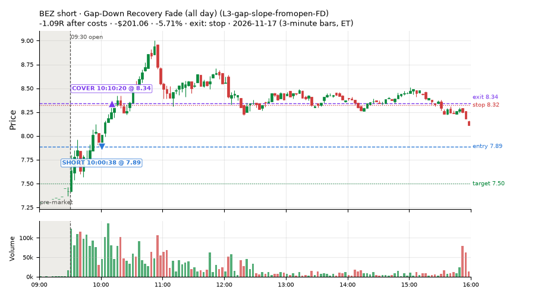
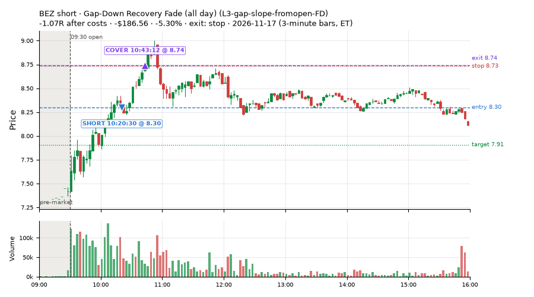
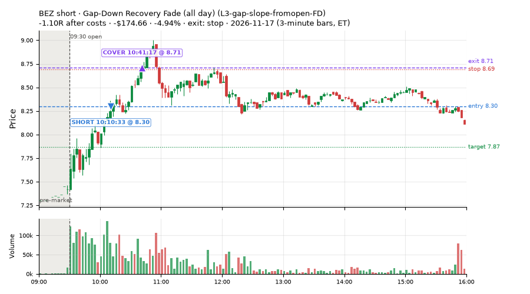
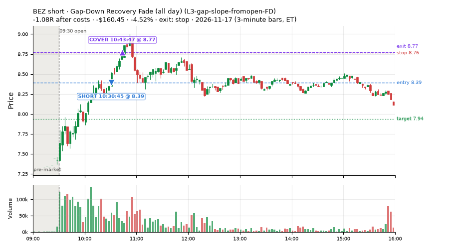
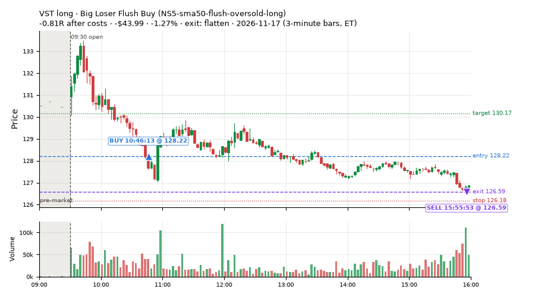

22 trades · win rate 59% · P/L $-465.07
PROBATION: no live setup has passed both locked test periods. 10 owner-directed setups added 2026-10-08 (MarcoFlow top 5 + 5 new), untested live. RW6G1 (RW6 + VWAP band guard) added 2026-10-09, probation.

| Symbol | Setup | Side | In | Out | Entry | Exit | Exit reason | % gained | P/L |
|---|---|---|---|---|---|---|---|---|---|
| BLMN | Gap-Down Recovery Fade (all day) (L3-gap-slope-fromopen-FD) | short | 10:05 | 10:55 | 10.62 | 10.46 | target | +1.51% | $53.12 |
| BLMN | Gap-Down Recovery Fade (all day) (L3-gap-slope-fromopen-FD) | short | 10:40 | 10:45 | 10.70 | 10.54 | target | +1.50% | $52.64 |
| BLMN | Gap-Down Recovery Fade (all day) (L3-gap-slope-fromopen-FD) | short | 10:30 | 10:43 | 10.77 | 10.61 | target | +1.49% | $51.20 |
| Symbol | Setup | Side | In | Out | Entry | Exit | Exit reason | % lost | P/L |
|---|---|---|---|---|---|---|---|---|---|
| BEZ | L3-gap-slope-fromopen-FD | short | 10:00 | 10:10 | 7.89 | 8.34 | stop | -5.71% | $-201.06 |
| BEZ | L3-gap-slope-fromopen-FD | short | 10:20 | 10:43 | 8.30 | 8.74 | stop | -5.30% | $-186.56 |
| BEZ | L3-gap-slope-fromopen-FD | short | 10:10 | 10:41 | 8.30 | 8.71 | stop | -4.94% | $-174.66 |
| BEZ | L3-gap-slope-fromopen-FD | short | 10:30 | 10:43 | 8.39 | 8.77 | stop | -4.52% | $-160.45 |
| VST | NS5-sma50-flush-oversold-long | long | 10:46 | 15:55 | 128.22 | 126.59 | flatten | -1.27% | $-43.99 |








Signal to fill: median 2s, 90th percentile 7s (22 trades). Bars close each minute; the order follows the bar close.
Best excursion (MFE): median 0.73R; worst (MAE) median 0.63R. 23% of trades never got +0.25R in our favour; 1 reached +1R and still closed at or below 0.
| Symbol | Setup | Best R | Worst R | Closed R |
|---|---|---|---|---|
| KBE | RW3-gapdn-rsi5pop-flowsell-short-FD | +1.17 | -0.97 | -1.20 |
| KRE | RW3-gapdn-rsi5pop-flowsell-short-FD | +0.99 | -1.09 | -1.31 |
| NKE | ST7-rsi50dn-long-pm-t1s1-FD | +0.70 | -1.26 | -1.12 |
| VST | NS5-sma50-flush-oversold-long | +0.80 | -0.82 | -0.81 |
| NKE | NS5-sma50-flush-oversold-long | +0.38 | -1.03 | -1.13 |
| Entry time | Trades | Win | Avg R | P/L |
|---|---|---|---|---|
| 09:50-10:30 | 4 | 25% | -0.62 | $-509.16 |
| 10:30-11:30 | 7 | 43% | -0.36 | $-149.06 |
| 11:30-13:00 | 7 | 71% | +0.25 | $95.85 |
| 14:00-16:00 | 4 | 100% | +0.19 | $97.30 |
| Setup | Trades | Win | Avg R after costs | Adj R (net of SPY) | Avg R ex-market (all sessions) | P/L |
|---|---|---|---|---|---|---|
| Gap-Down Recovery Fade (all day) (L3-gap-slope-fromopen-FD) | 7.0 | 43% | -0.28 | -0.55 | +0.07 (beta -0.67, n 156) | $-565.77 |
| Late-Day ETF Dip Buy (near-miss) (NM-ETF-late-dip-di-long) | 4.0 | 100% | +0.19 | +0.20 | +0.21 (beta +0.00, n 9) | $97.30 |
| Big Loser Flush Buy (NS5-sma50-flush-oversold-long) owner-directed; holdouts once: Sep-Oct -0.008R n73, Apr-Jun +0.002R n231 | 2.0 | 0% | -0.97 | -0.97 | +0.03 (beta +0.58, n 37) | $-68.56 |
| Gap-Down Pop Fade, Heavy Selling (all day) (RW3-gapdn-rsi5pop-flowsell-short-FD) | 3.0 | 33% | -0.82 | -1.03 | +0.01 (beta -1.08, n 147) | $-15.44 |
| Gap-Down Pop Fade (all day) (RW5-heat30-flowsell-rsi5pop-gapdn-short-FD) | 5.0 | 100% | +0.86 | +0.28 | +0.01 (beta -0.92, n 165) | $114.45 |
| RSI Collapse Dip Buy (all day) (ST7-rsi50dn-long-pm-t1s1-FD) | 1.0 | 0% | -1.12 | -1.49 | +0.09 (beta +0.05, n 33) | $-27.05 |
Market direction (SPY, beta 1) accounted for $266.95 of today's $-465.07; the rest ($-732.02) came from the setups themselves. Avg R net of SPY: -0.37 (incl. a hedge leg's cost; report only).
6 setups live today. Today: 129 signals, 22 taken, 1 lost because another setup held the symbol (1%). Since 2026-10-06 (31 sessions): 5420 signals, 1314 taken, 194 lost to other setups (4%). Peak open positions today 9 of 77 slots. Earnings blackout removed 329 symbols before scanning.
Simulated playing time (not live): 4081 what-if trades of signals not taken, avg +0.13R, 63% winners; of them 194 lost to another setup (avg -0.13R).
Silent: intraday_momentum · Crowded out: MF4-h40-open-flowsell, MF3-open-flowsell-rsi5hi, MF5-flowsell-vwapup-rsi5hi · Starved: MF2-open-rsimidhi-flowsell
| Prio | Setup | Today sig / taken | Sessions | Signals / taken / trades | Taken/day | Expected/day | Lost to other setups | Lost to (setup n) | Top skip reasons | SIMULATED: not-taken n / avg R / win | Verdict |
|---|---|---|---|---|---|---|---|---|---|---|---|
| 1 | Late-Day ETF Dip Buy (near-miss) NM-ETF-late-dip-di-long | 4 / 4 | 5 | 9 / 9 / 9 | 1.80 | – | 0 | – | – | 0 / – | slow 9.0 entries/week; ~7 weeks to 60 trades |
| 2 | Gap-Down Pop Fade (all day) RW5-heat30-flowsell-rsi5pop-gapdn-short-FD | 8 / 5 | 23 | 236 / 165 / 165 | 7.17 | 12.79 | 0 | – | spread / quote / size 28, daily loss cap 21, not shortable / shorts off 21 | 71 / -0.04R / 46% | ok 35.9 entries/week |
| 3 | Gap-Down Pop Fade, Heavy Selling (all day) RW3-gapdn-rsi5pop-flowsell-short-FD | 13 / 3 | 23 | 259 / 147 / 147 | 6.39 | 13.59 | 1 | CWT14-failbrk-pdl-p10-lowvol-long 1 | daily loss cap 40, not shortable / shorts off 36, spread / quote / size 35 | 112 / +0.18R / 62% | ok 32.0 entries/week |
| 4 | RSI Collapse Dip Buy (all day) ST7-rsi50dn-long-pm-t1s1-FD | 3 / 1 | 17 | 61 / 33 / 33 | 1.94 | 2.17 | 0 | – | spread / quote / size 26, daily loss cap 2 | 28 / +0.21R / 61% | slow 9.7 entries/week; ~6 weeks to 60 trades |
| 5 | Gap-Down Recovery Fade (all day) L3-gap-slope-fromopen-FD | 97 / 7 | 15 | 2950 / 156 / 156 | 10.40 | – | 55 | L3-gap-slope-fromopen-FD 55, L3-gap-slope-rsi5hi-FD 14 | not shortable / shorts off 1851, per-setup cap 648, daily loss cap 120 | 2789 / +0.20R / 66% | ok 52.0 entries/week |
| 6 | Big Loser Flush Buy NS5-sma50-flush-oversold-long | 4 / 2 | 29 | 58 / 37 / 37 | 1.28 | 2.41 | 0 | – | daily loss cap 13, spread / quote / size 8 | 21 / +0.00R / 52% | slow 6.4 entries/week; ~9 weeks to 60 trades |
Every trade is attached as a CSV you can open and edit in Excel or Google Sheets. Live page: https://misiti15.github.io/MCF/live/